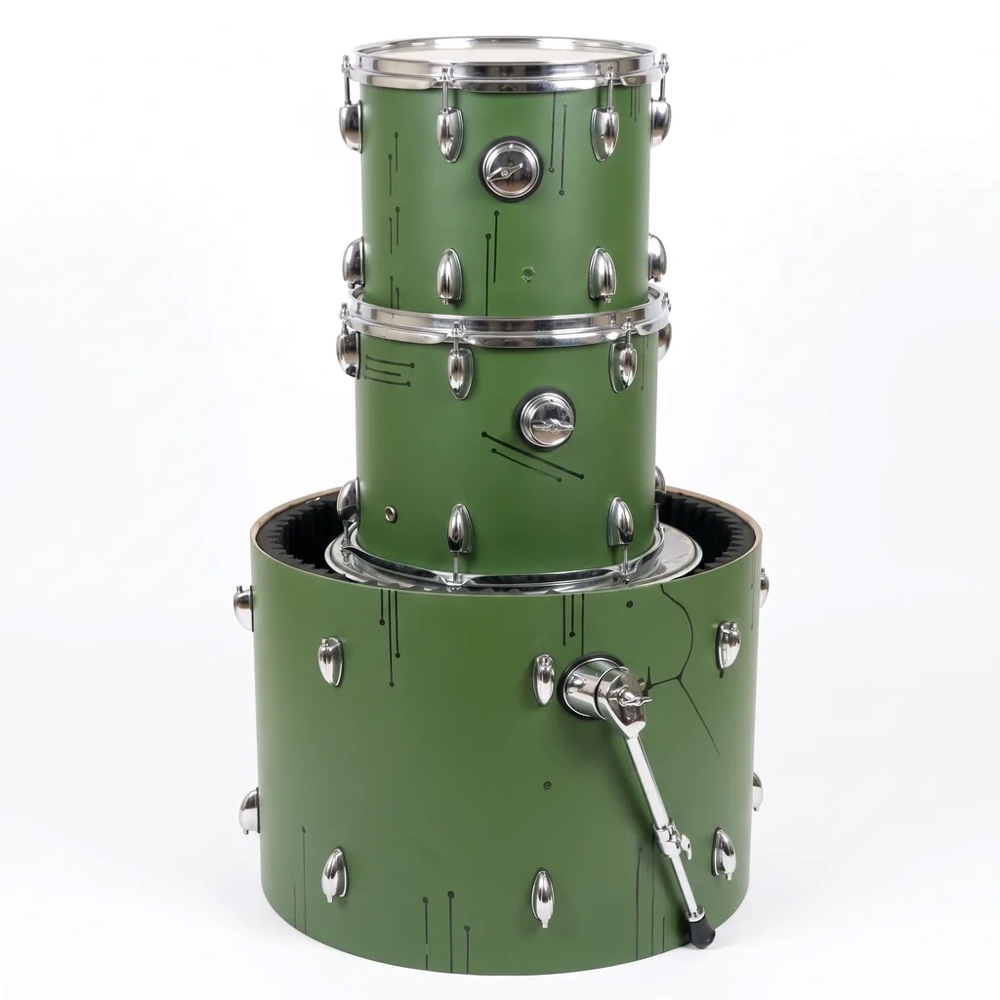
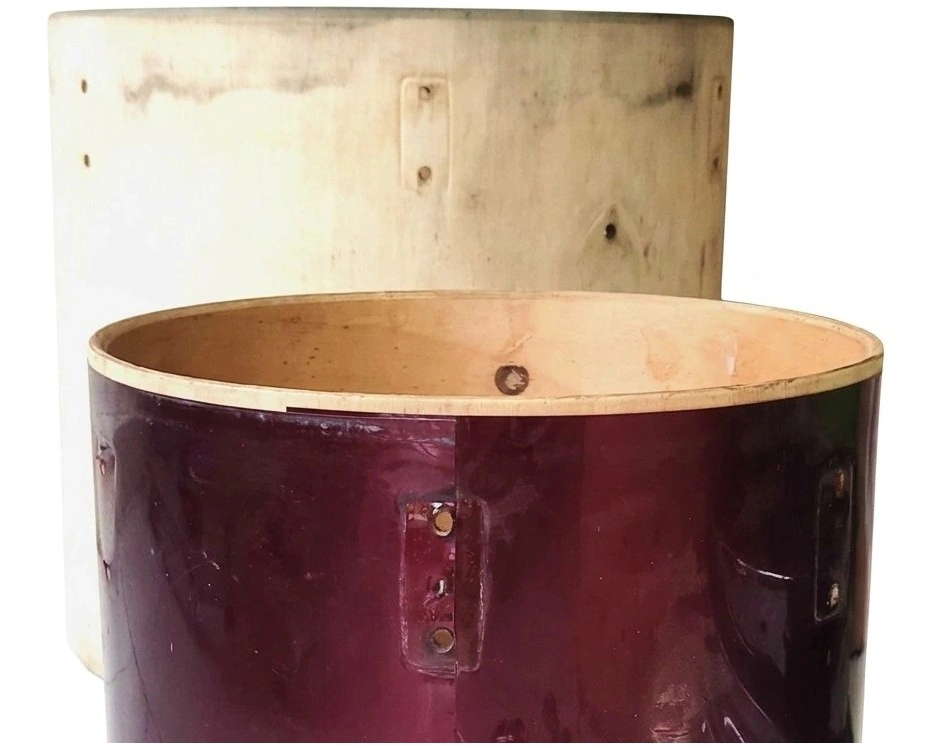

Trabajo realizado
Tu batería merece algo más que una afinación rápida
Iglesias · Bandas · Estudios · Bateristas independientes
Servicios de limpieza profunda, restauración de herrajes y maderas, mantenimiento y afinación acústica para devolverle la vida y el sonido profesional a tu kit.
Transformación completa
Un cambio de 180 grados
Proyecto propio de restauración
Te presento mi kit personal. Es un kit de gama económica con más de 25 años de servicio que llegó a mis manos en un estado crítico, con los cascos deteriorados y evidentes señales del paso del tiempo. A simple vista, no parecía tener mucho que ofrecer. Pero detrás de ese desgaste todavía había una batería con potencial que merecía una segunda oportunidad. Después de mucho trabajo y esfuerzo, este es el resultado. Arrastra el divisor y compruébalo tú mismo.
- Pieza
- Kit completo: bombo y toms.
- Antes
- Acabado original gastado, cascos desnudos y manchados
- Después
- Acabado verde mate con trazos a mano y herrajes montados


Casos de éxito
Trabajos realizados
Usa las flechas o desliza para ver cada caso. Toca cada etapa para verla.
01 / 01
Tu instrumento en las mejores manos
Envíame fotos
La tuya puede ser el próximo caso
Mándame fotos de cómo está hoy. Te digo qué necesita y qué se puede lograr.
Servicios
Lo que te ofrezco
Soluciones especializadas para devolver la resonancia, pureza estética y confiabilidad mecánica a tu instrumento.
Limpieza Profunda
Desarme de aros y parches, remoción de polvo incrustado y suciedad en general en madera y cromo para un look impecable.
Tratamiento de Óxido
Eliminación de corrosión en herrajes, pulido de cromados y lubricación preventiva para evitar el desgaste prematuro.
Mantenimiento Integral
Revisión de bordes de apoyo, ajuste de bellotas internas, cambio de fieltros y estabilidad total.
Afinación Profesional
Calibración por intervalos armónicos entre toms, bombo y redoblante para sonido nítido en vivo, iglesia o estudio.
Diagnóstico guiado
¿Cuál se parece a tu situación actual?
Haz clic en cada caso para ver la recomendación directa.
-
Lo que necesita
Limpieza + mantenimiento
La suciedad acumulada en parches, aros y herrajes se trata con limpieza por partes. Con fotos veo si además conviene revisar componentes mecánicos.
Quiero consultar -
Lo que necesita
Revisión + afinación
A veces es la afinación; otras, un parche gastado, un tensor que no sostiene o un aro deformado. Primero se revisa, después se afina.
Quiero consultar -
Lo que necesita
Restauración / tratamiento
Depende de cuánto ha avanzado. El óxido superficial suele tratarse; el profundo puede dejar marca. Las fotos de cerca ayudan a saberlo.
Quiero consultar -
Lo que necesita
Evaluación + mantenimiento profundo
Es lo más común en kits de iglesia y salas de ensayo: años de uso semanal y poco cuidado. Se evalúa pieza por pieza antes de intervenir.
Quiero consultar -
Lo que necesita
Puesta a punto
Ajuste general, revisión de herrajes y afinación para que el kit responda como debe antes de un servicio, ensayo o grabación.
Quiero consultar
Proceso
Así trabajo
Hago una inspección del estado del instrumento antes de quitar un solo tornillo.